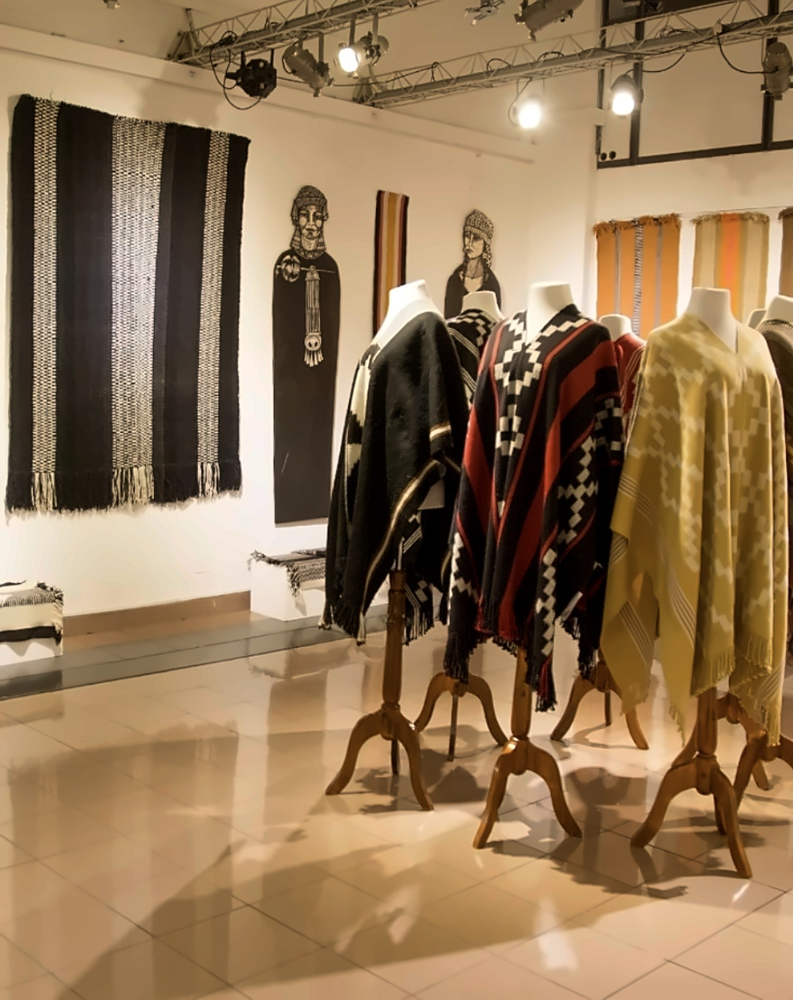
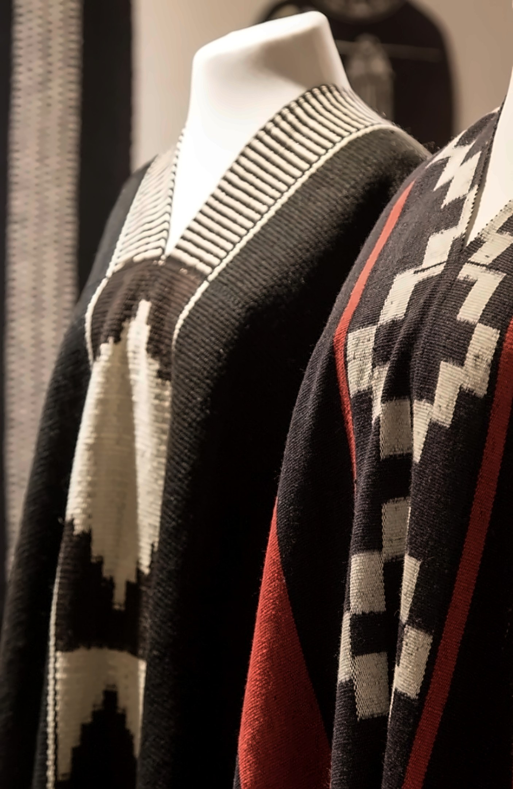
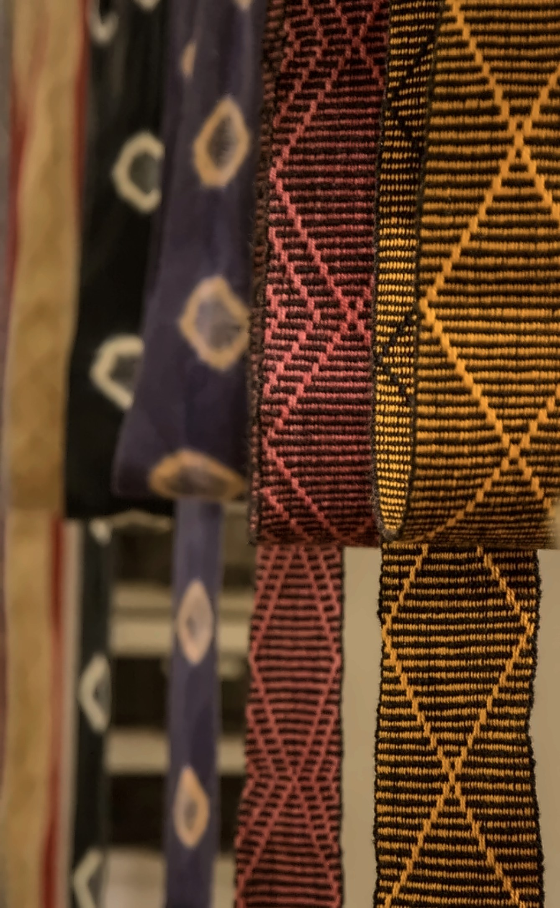
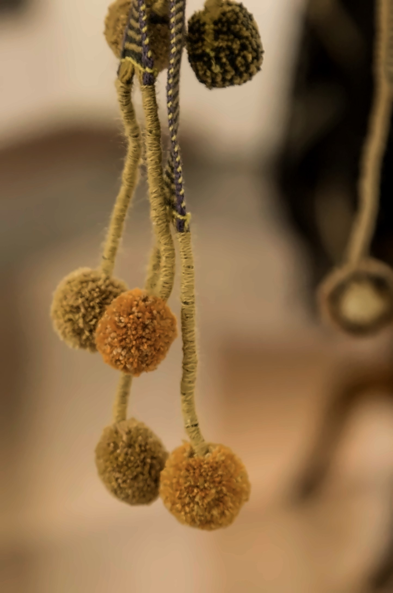

Muestras
La Pampa Teje se presentó en dos sedes de la Ciudad de Buenos Aires: primero en el Museo Casa Nacional del Bicentenario, la muestra principal, y después en Casa de La Pampa, que dio continuidad al recorrido.
Museo Casa Nacional del Bicentenario
Del 19 de junio al 19 de julio de 2026
Riobamba 985, CABA · Sala 303
Dirección Nacional de Museos y Gestión Patrimonial, Secretaría de Cultura de la Nación
A través de un recorrido articulado que se inicia en el Museo del Bicentenario, la propuesta busca generar un diálogo entre patrimonio, arte contemporáneo, trabajo artesanal y federalismo, promoviendo la circulación de las producciones pampeanas en espacios de alcance nacional sin desvincularlas de sus contextos comunitarios e institucionales de pertenencia.
Museo Casa Nacional del Bicentenario
Guía de la muestra
- 01El OrigenExhibición de vellones de lana cruda, lana hilada, lana teñida con plantas autóctonas, y husos.Ver el proceso →
- 02La Alquimia del ColorMuestra de tintes naturales obtenidos de la flora nativa (raíz de piquillín, jarilla, cáscara de cebolla, papa de monte, entre otras).Ver el teñido →
- 03Obras MaestrasExhibición de piezas terminadas (ponchos pampa, fajas, centros de mesa y matras, caminos, pie de cama).Ver las piezas →
Casa de La Pampa
Del 3 de agosto al 3 de septiembre de 2026
Suipacha 346, CABA · Salón Planta Baja
La continuidad del recorrido en Casa de La Pampa reafirma la pertenencia de las producciones exhibidas, que vuelven a vincularse con las memorias y las comunidades que les otorgan sentido.




Qué busca La Pampa Teje
- Fortalecer la visibilidad de las tejedoras pampeanas en ámbitos de alcance nacional
- Generar espacios de encuentro e intercambio entre artesanas y públicos diversos
- Difundir el trabajo artesanal en telar y su aporte a las economías regionales
- Reconocer el rol de las mujeres en la continuidad y transmisión de estos saberes
- Incentivar el interés de nuevas generaciones por las técnicas textiles tradicionales